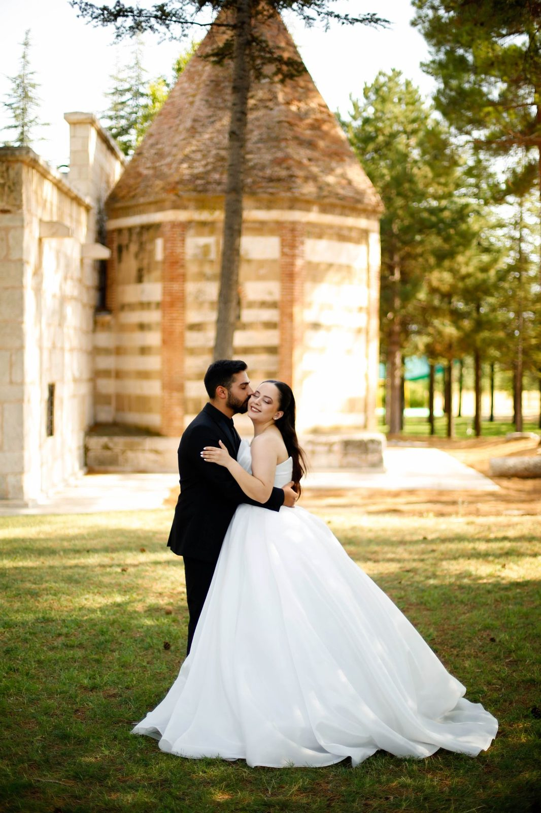
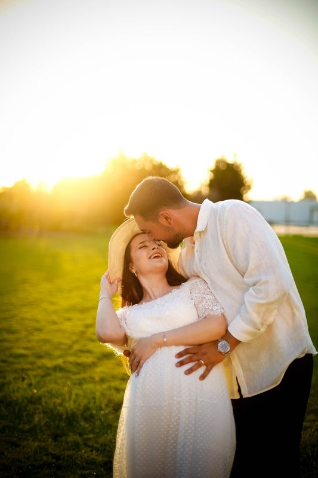
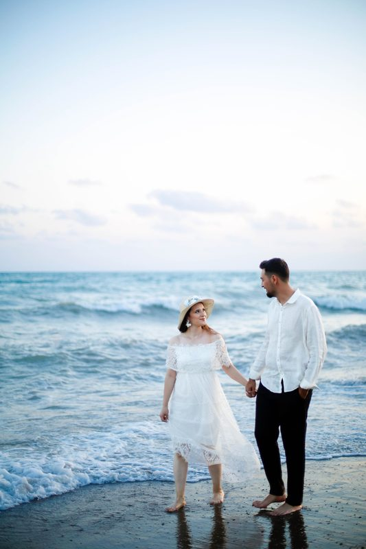

Ana Sayfa / Portfolyo
Seçilmiş kareler.
Bir fotoğrafa tıklayın, tam ekranda görün. Daha fazlası Instagram hesaplarımızda.






Daha fazlası Instagram'da: @baserfotograf

Ana Sayfa / Portfolyo
Bir fotoğrafa tıklayın, tam ekranda görün. Daha fazlası Instagram hesaplarımızda.


Daha fazlası Instagram'da: @baserfotograf